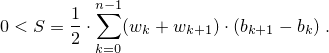

A piecewise_linear_distribution random number distribution produces random numbers x, b0 ≤ x < bn , distributed over each subinterval [ bi, bi+1 ) according to the probability density function p(x | b0,…,bn, ρ0,…,ρn) = ρi · bi+1 - x bi+1 - bi + ρi+1 · x - bi bi+1 - bi , for bi ≤ x < bi+1 .
The n+1 distribution parameters bi, also known as this distribution's interval boundaries, shall satisfy the relation bi < bi+1 for i = 0, …, n-1 . Unless specified otherwise, the remaining n+1 distribution parameters are calculated as ρk = wk / S for k = 0, …, n , in which the values wk, commonly known as the weights at boundaries, shall be non-negative, non-NaN, and non-infinity. Moreover, the following relation shall hold: 
template<class RealType = double>
class piecewise_linear_distribution{
public:
// types
typedef RealType result_type;
typedef unspecified param_type;
// constructor and reset functions
piecewise_linear_distribution();
template<class InputIteratorB, class InputIteratorW>
piecewise_linear_distribution(InputIteratorB firstB, InputIteratorB lastB,
InputIteratorW firstW);
template<class UnaryOperation>
piecewise_linear_distribution(initializer_list<RealType> bl, UnaryOperation fw);
template<class UnaryOperation>
piecewise_linear_distribution(size_t nw, RealType xmin, RealType xmax, UnaryOperation fw);
explicit piecewise_linear_distribution(const param_type& parm);
void reset();
// generating functions
template<class URNG>
result_type operator()(URNG& g);
template<class URNG>
result_type operator()(URNG& g, const param_type& parm);
// property functions
vector<result_type> intervals() const;
vector<result_type> densities() const;
param_type param() const;
void param(const param_type& parm);
result_type min() const;
result_type max() const;
};
Effects: Constructs a piecewise_linear_distribution object with n = 1 , ρ0 = ρ1 = 1 , b0 = 0 , and b1 = 1 .
template<class InputIteratorB, class InputIteratorW>
piecewise_linear_distribution(InputIteratorB firstB, InputIteratorB lastB,
InputIteratorW firstW);
Requires: InputIteratorB and InputIteratorW shall each satisfy the requirements of an input iterator (Table [tab:iterator.input.requirements]) type. Moreover, iterator_traits<InputIteratorB>::value_type and iterator_traits<InputIteratorW>::value_type shall each denote a type that is convertible to double. If firstB == lastB or ++firstB == lastB, let n = 1 , ρ0 = ρ1 = 1 , b0 = 0 , and b1 = 1 . Otherwise, [firstB, lastB) shall form a sequence b of length n+1, the length of the sequence w starting from firstW shall be at least n+1, and any wk for k ≥ n+1 shall be ignored by the distribution.
Effects: Constructs a piecewise_linear_distribution object with parameters as specified above.
template<class UnaryOperation>
piecewise_linear_distribution(initializer_list<RealType> bl, UnaryOperation fw);
Requires: Each instance of type UnaryOperation shall be a function object ([function.objects]) whose return type shall be convertible to double. Moreover, double shall be convertible to the type of UnaryOperation's sole parameter.
Effects: Constructs a piecewise_linear_distribution object with parameters taken or calculated from the following values: If bl.size() < 2, let n = 1, ρ0 = ρ1 = 1 , b0 = 0 , and b1 = 1 . Otherwise, let [bl.begin(), bl.end()) form a sequence b0, …, bn , and let wk = fw(bk) for k = 0, …, n .
Complexity: The number of invocations of fw shall not exceed n+1.
template<class UnaryOperation>
piecewise_linear_distribution(size_t nw, RealType xmin, RealType xmax, UnaryOperation fw);
Requires: Each instance of type UnaryOperation shall be a function object ([function.objects]) whose return type shall be convertible to double. Moreover, double shall be convertible to the type of UnaryOperation's sole parameter. If nw = 0 , let n = 1 , otherwise let n = nw. The relation 0 < δ = (xmax - xmin) / n shall hold.
Effects: Constructs a piecewise_linear_distribution object with parameters taken or calculated from the following values: Let bk = xmin + k · δ for k = 0, …, n , and wk = fw(bk) for k = 0, …, n .
Complexity: The number of invocations of fw shall not exceed n+1.
vector<result_type> intervals() const;
Returns: A vector<result_type> whose size member returns n + 1 and whose operator[] member returns bk when invoked with argument k for k = 0, …, n .
vector<result_type> densities() const;
Returns: A vector<result_type> whose size member returns n and whose operator[] member returns ρk when invoked with argument k for k = 0, …, n .